정보통신기사(구) (2010-09-05 기출문제)
1과목: 디지털 전자회로
1. 6개의 플립플롭으로 구성된 상향 계수기(up counter)의 모듈러스와 이 계수기로 계수할 수 있는 최대계수는?
- 모듈러스 : 5, 최대계수 : 63
- 모듈러스 : 6, 최대계수 : 64
- 모듈러스 : 63, 최대계수 : 64
- 모듈러스 : 64, 최대계수 : 63
(정답률: 69%)

2. 다음 그림과 같은 회로의 역할은?
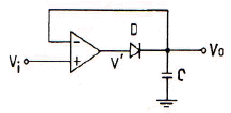
- Voltage follower
- Log amplifier
- Peak detector
- Integrator
(정답률: 72%)
3. 다음 정류회로에서 직류의 출력전압(Vdc)과 출력전류(Idc)는 약 얼마인가? (단, Vi=100√2sin(377t), R=200[Ω], n1:n2=10:1)
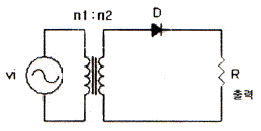
- Vdc=4.5[V], Idc=2.25[mA]
- Vdc=4.5[V], Idc=22.5[mA]
- Vdc=45[V], Idc=2.25[mA]
- Vdc=45[V], Idc=22.5[mA]
(정답률: 78%)
4. 다음 중 평형변조 회로의 출력에 나타나지 않는 것은?
- 하측파대
- 상측파대
- 상측파대와 하측파대
- 반송파
(정답률: 74%)
5. 다음 중 변조신호의 주파수가 fm인 경우 협대역 FM(Narrow-band FM)의 대역폭은?
- 약 fm
- 약 2fm
- 약 4fm
- 약 8fm
(정답률: 87%)
6. 다음 3변수 카르노도를 간략화한 것은?
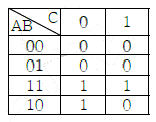
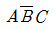
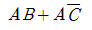
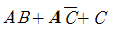
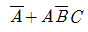
(정답률: 80%)
7. 그림에서 D1, D2는 5[V] 제너다이오드이다. 부하전압 VL의 범위가 적합한 것은? (단, Vs=10 sin(ωt+θ)[V])
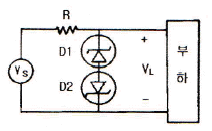
- VL≤5[V]
- VL≥5[V]
- -5[V]≤VL≤5[V]
- VL≤-5[V] 또는 VL≥5[V]
(정답률: 75%)
8. 그림과 같은 단안정 멀티바이브레이터에서 출력(Vo)전압의 펄스폭 τ[sec]은?
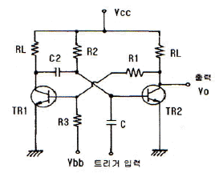
- τ = C2 R2 ln10
- τ = R1 R2 ln2
- τ = C2 R2 ln2
- τ = C2 R1 ln10
(정답률: 67%)
9. 다음 중 데이터 선택회로라고 불리우며, 여러 개의 입력 신호 중 하나를 선택하여 하나의 출력선과 연결하여 주는 조합 논리회로는?
- Multiplexer
- Demultiplexer
- Encoder
- Decoder
(정답률: 83%)
10. 그림과 같은 CC 증폭기 회로에서 전압이득은? (단, 입력저항 Ri=2⑤[kΩ], hie=1.1[kΩ])
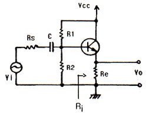
- 약 51
- 약 1.7
- 약 0.99
- 약 0.11
(정답률: 67%)
11. 다음 중 PLL(Phase Locked Loop)의 주요 구성이 아닌 것은?
- 위상비교기
- 인코더
- VCO(Voltage Controlled Oscillator)
- LPF(Low Pass Filter)
(정답률: 51%)
12. 다음 중 RC 발진기에 속하지 않는 것은?
- 이상형 발진기
- 빈 브리지(Wien bridge) 발진기
- 터만(Terman)형 발진기
- 클랩(Clap) 발진기
(정답률: 64%)
13. 그림의 단안정 멀티바이브레이터 회로에서 R=100[kΩ], C=0.47[μF]이면 출력펄스의 폭은?
- 약 8.15[ms]
- 약 16.3[ms]
- 약 32.6[ms]
- 약 65.2[ms]
(정답률: 57%)
14. 다음 논리회로와 같은 게이트(Gate) 회로에 해당되는 것은? (단, A, B는 입력단자이며 X는 출력단자이다.)
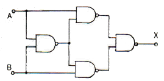
- AND
- NOR
- OR
- Exclusive OR
(정답률: 64%)
15. 100[MHz] 발진기를 사용해서 25[MHz]를 만들려면 최소한 몇 개의 플립플롭이 필요한가?(오류 신고가 접수된 문제입니다. 반드시 정답과 해설을 확인하시기 바랍니다.)
- 1개
- 2개
- 3개
- 4개
(정답률: 64%)
16. 다음 전력증폭기 중 변압기가 없어도 푸시풀 동작이 가능하며 직접 부하(스피커)를 구동할 수 있는 것은?
- OTL 증폭기
- D급 증폭기
- OCL 증폭기
- C급 증폭기
(정답률: 72%)
17. 수정발진기에서 안정된 발진을 계속하기 위한 수정의 임피던스 조건은?
- 용량성
- 저항성
- 유도성
- 저항성+용량성
(정답률: 80%)
18. 다음 중 FET와 TR의 차이점이 아닌 것은?
- FET는 TR보다 입력 저항이 크다.
- TR은 양극성 소자이고 FET는 단극성 소자이다.
- FET는 TR보다 잡음이 적다.
- FET는 TR보다 이득대여폭적이 크다.
(정답률: 61%)
19. 펄스의 펄스폭이 10[μs]이고 펄스 반복주파수가 1[kHz]일 때 평균 전력이 20[W]인 경우, 이 펄스의 첨두전력은?
- 1[kW]
- 2[kW]
- 3[kW]
- 4[kW]
(정답률: 68%)
20. 다음 중 자리올림이 있는 덧셈에 사용하기 위한 전가산기(FA)의 회로구성은?
- 2개의 EX-OR, 3개의 AND
- 2개의 EX-OR, 2개의 AND, 1개의 OR
- 2개의 EX-OR, 2개의 OR, 1개의 AND
- 1개의 EX-OR, 2개의 AND, 2개의 OR
(정답률: 69%)
2과목: 정보통신 시스템
21. HDLC 프레임의 구성으로 옳은 것은?
- 플래그 - 주소부 - FCS - 제어부 -정보부 - 플래그
- 주소부 - 플래그 - 제어부 - FCS -정보부 - 플래그
- 플래그 - 주소부 - 정보부 -제어부 - FCS - 플래그
- 플래그 - 주소부 - 제어부 -정보부 - FCS - 플래그
(정답률: 60%)
22. 다음 중 광섬유 케이블 통신에서 대역폭과 관련 있는 것은?
- 중계기의 거리
- 통화회선의 용량
- 도청의 정도
- 광섬유의 수명
(정답률: 73%)
23. DSB의 전송 대역폭은 신호 대역폭의 몇 배인가?
- 1배
- 2배
- 3배
- 4배
(정답률: 81%)
24. PCM에서 양자화 잡음을 경감시키는 방법과 거리가 먼 것은?
- 양자화 스텝수 증가
- 압축과 신장
- 비직선 양자화
- 부호 비트수의 감소
(정답률: 49%)
25. E1 디지털 전송링크의 전송속도는?
- 1.544[Mbps]
- 2.048[Mbps]
- 34.368[Mbps]
- 44.736[Mbps]
(정답률: 62%)
26. 평균고장간격(MTBF)이 49시간이고 평균수리시간(MTTR)이 1시간인 장치 3대가 직렬로 연결되어 있는 시스템에서 전체 직렬 시스템의 가동률은?
- 약 1.06
- 약 1.00
- 약 0.94
- 약 0.88
(정답률: 73%)
27. 다음 중 통신제어장치의 버퍼방식이 아닌 것은?
- 비트(bit) 버퍼방식
- 니블(nibble) 버퍼방식
- 문자(character) 버퍼방식
- 메시지(message) 버퍼방식
(정답률: 71%)
28. 다음 중 ATM 교환시스템(교환기)의 구성요소가 아닌 것은?
- BRI(Basic Rate Interface)
- IPP(Input Port Processor)
- OPP(Output Port Processor)
- MUX(Multiplexer) 및 DE-MUX(Demultiplexer)
(정답률: 61%)
29. LAN에 관련된 프로토콜의 설명으로 옳은 것은?
- IEEE 802.3은 CSMA/CD에 대한 규정
- IEEE 802.2는 token bus에 대한 규정
- IEEE 802.5는 LAN의 LLC 서브 계층에 관한 규정
- IEEE 802.6은 token ring에 대한 규정
(정답률: 67%)
30. ITU-T 패킷형 단말과 교환기 사이의 접속 규격 중 물리계층 인터페이스에 해당하는 것은?
- X.21
- X.25
- X.28
- X.29
(정답률: 49%)
31. DTE와 DCE간 인터페이스에 대한 ITU-T국제규격으로 표준화하고 있는 구성의 범위는?
- 하드웨어규격, 스프트웨어 조건
- 전송회선규격, 데이터 전송조건, 네트워크조건
- 기계적, 전기적, 기능적 및 절차적 특성의 조건
- 통신방식, 회선망 사용, 전송레벨
(정답률: 76%)
32. 모든 사물에 전자태그(RFID)를 부착하고 주변에 설치되어 있는 센서 판독기를 통해 관련 정보를 인식하고 관리하는 네트워크는?
- USN
- BCN
- TMN
- VAN
(정답률: 70%)
33. 다음 설명의 ( ) 안에 알맞은 것은?
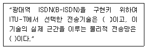
- SONET/SDH, LAN
- ATM, SONET/SDH
- X.25, SONET/SDH
- SONET/SDH, X.21
(정답률: 65%)
34. 다음 중 No.7 신호방식의 특징이 아닌 것은?
- 공통선 신호방식이다.
- 기능별로 모듈화된 계층구조이다.
- 다양한 서비스 제공능력을 가진다.
- 패킷교환망 전용의 신호방식이다.
(정답률: 68%)
35. 1[dB/km]의 손실을 갖는 전송로 입력에 1[V]를 가하고 1000[km] 종단에서 1[V]의 출력 전압을 갖기 위해 전압이득이 100인 중계기를 사용하고자 한다. 이 경우 총 몇 대의 중계기가 필요한가?
- 25
- 50
- 100
- 150
(정답률: 53%)
36. 통신망 유지보수 및 관리용 네트워크로서 ITU-T에서 권고하고 있는 TMN에 대한 설명 중 틀린 것은?
- TMN은 통신망의 운용, 관리 및 유지보수를 일원화하여 제공할 수 있는 망이다.
- 각종 운용보전 시스템을 상호 연결하여 망관리를 일원화하고 있다.
- 제조사가 다른 시스템을 상호 연결하기 위해 프로토콜 및 인터페이스에 대한 표준화가 필요하다.
- TMN은 7계층으로 분류하여 계층간의 책임과 권한 관계를 표준화하여 권고하고 있다.
(정답률: 63%)
37. 다음 중 국내에서 개발한 TDX 교환시스템의 제어방식은?
- 공통제어방식
- 자동제어방식
- 분산제어방식
- 원격제어방식
(정답률: 59%)
38. 지능망 구성요소 가운데 망 서비스를 위한 핵심적인 요소로서 서비스 제어 로직과 가입자에 대한 정보를 저장하고 있는 것은?
- SSP(service switching point)
- SCP(service control point)
- STP(signal transfer point)
- SMS(service management system)
(정답률: 56%)
39. 다음 중 DATA 전송시 진폭감쇠나 전송지연에 의한 왜곡을 보완하여 주기 위한 것은?
- 등화기
- 여파기
- 평활회로
- 분파회로
(정답률: 57%)
40. 인터넷에서 IP 네트워크들 간을 연결하기 위해 사용되며, 네트워크 계층에서 동작하는 것은?
- 리피터
- 서버
- 브리지
- 라우터
(정답률: 84%)
3과목: 정보통신 기기
41. 다음 중 방송계 뉴미디어에 해당하는 것은?
- CATV
- ARS
- WAN
- VAN
(정답률: 77%)
42. 팩시밀리에서 연속된 2차원 정보에 대해 부호화 하는 주사선과 부호화 이전 주사선과의 상관관계를 부호화 하는 방법은?
- Wyle 부호
- MR(Modified Read) 부호
- MH(Modified Huffman) 부호
- BGH 부호
(정답률: 58%)
43. 실제 보낼 데이터가 있는 DTE에만 동적인 방식으로 각 부채널에 시간 폭을 할당하는 방식은?
- 지능형 다중화기
- 주파수분할 다중화기
- 시분할 다중화기
- 광대역 다중화기
(정답률: 69%)
44. 변복조기(Modem)에서 0이나 1의 신호가 연속되는 것을 방지하여 스펙트럼의 분산기능을 수행하며 수신측에서 동기를 잃지 않도록 해주는 것은?
- 채널 엔코더
- 채널 디코더
- 프로토콜 제어기
- 스크램블러
(정답률: 84%)
45. 위성통신에서 사용되는 다원접속에 대한 설명으로 틀린 것은?
- 주파수분할 다원접속(FDMA) 방식은 아날로그 방식에서 사용된다.
- 시분할 다원접속(TDMA) 방식은 디지털 통신방식에서 사용한다.
- 코드분할 다원접속(CDMA) 방식은 대역확산 통신방식을 이용한다.
- 코드분할 다원접속(CDMA) 방식은 FDMA와 TDMA의 절충형으로 주파수 이용효율이 좋다.
(정답률: 69%)
46. 팩시밀리의 압축 부호화 방식 중 MR 부호화 방식의 모드에 해당되지 않는 것은?
- 전달 모드
- 패스 모드
- 수평 모드
- 수직 모드
(정답률: 51%)
47. 모뎀에 사용되는 PSK 방식에 해당되지 않는 것은?
- 2진 PSK
- 4진 PSK
- 8진 PSK
- 20진 PSK
(정답률: 78%)
48. 다음 중 FM 수신기의 구성요소가 아닌 것은?
- 국부 발진기
- 중간주파 증폭기
- 주파수 변별기
- IDC 회로
(정답률: 63%)
49. 위성통신의 특징 설명으로 틀린 것은?
- 통신회선을 구성하는데 있어 신속성과 유연성이 떨어진다.
- 광대역의 통신회선을 구성할 수 있다.
- 지상의 재해에 영향이 적다.
- 동보성의 통신 기능을 가진다.
(정답률: 66%)
50. 다음 중 전기도체 내에서 온도에 따른 운동량 변화로 인해 발생하는 잡음은?
- 누화 잡음
- 백색 잡음
- 충격 잡음
- 상호변조 잡음
(정답률: 72%)
51. 다음 중 HDTV의 주사선수와 화면의 비(가로:세로)가 옳은 것은?
- 625, 9:16
- 1125, 16:9
- 1125, 4:3
- 625, 4:9
(정답률: 81%)
52. 다음 중 비디오텍스(videotex)의 구성요소가 아닌 것은?
- 원격 감시장치
- 정보 축적장치
- 사용자 단말장치
- 전화 통신망
(정답률: 45%)
53. 컴퓨터를 사용하여 마이크로필름에 들어있는 정보를 검색하는 장치는?
- CAM
- CAR
- COM
- OCR
(정답률: 56%)
54. 통신제어장치의 통신접속에서 복수개의 단말이 1개의 통신회선을 공유하는 경우에 복수의 논리적인 통신회선을 설정하는 기능은?
- 통신방식제어
- 제어정보의 식별
- 다중접속방식
- 흐름 및 우선권 제어
(정답률: 70%)
55. 다음 중 X.400 계열의 권고에 따른 전자우편 시스템은?
- MHS
- VAN
- CATV
- Teletex
(정답률: 76%)
56. 고속 광대역 통신에 적합한 ATM 교환기의 비동기식 전송모드(ATM)에 대한 설명으로 옳은 것은?
- 다양한 Qos class가 불가능하다.
- 정보의 지연이 항상 일정하다.
- 다양한 종류의 트래픽을 통합할 수 있다.
- 가변 비트율(VBR)의 정보를 셀 단위로 취급한다.
(정답률: 54%)
57. 다음 중 DCE(Data Circuit-terminating Equipment)에 속하지 않는 것은?
- MODEM 장치
- DSU 장치
- CSU 장치
- FEP 장치
(정답률: 55%)
58. 다음 중 위성통신용 지구국에서 고출력 송신장치의 대전력 증폭기로 주로 사용되는 것은?
- 진행파관
- FET 증폭기
- 연산증폭기
- 푸시풀 증폭기
(정답률: 52%)
59. 폐쇄회로 텔레비전(CCTV)의 설명으로 적합한것은?
- 산업, 교육 등 한정된 목적이나 장소에서 주로 사용된다.
- 초기에 TV의 난시청 지역을 해소하기 위한 것이다.
- 송신에서 수신까지 무선통신 채널로만 구성된다.
- 공중파 수신안테나를 사용하여 지역에 구분없이 누구나 수신할 수 있다.
(정답률: 80%)
60. 인터 네트워킹 장비 중 경로설정 기능을 가진 것은?
- 브리지(Bridge)
- 라우터(Router)
- 모뎀(Modem)
- 리피터(Repeater)
(정답률: 75%)
4과목: 정보전송 공학
61. HDLC 프로토콜에 대한 설명으로 적합하지 않은 것은?
- 에러검출 방식으로 CRC를 사용한다.
- 전송제어 절차로 비트방식 프로토콜이다.
- OSI 7계층 중 데이터링크 계층에 관한 프로토콜이다.
- ISO에서 point-to-point 전송만을 지원키 위해 제안된 프로토콜이다.
(정답률: 72%)
62. 기저대역 전송 부호의 형식으로 바람직하지 않은 특성은?
- 소요 전송대역폭이 적을 것
- 교류보다는 직류성분이 많을 것
- 동기정보의 추출이 용이할 것
- 잡음에 강할 것
(정답률: 64%)
63. FEC(Forward Error Correction)에 대한 설명으로 적합하지 않은 것은?
- 에러 정정 기능을 포함한다.
- 역채널을 사용한다.
- 연속적인 데이터 전송이 가능하다.
- 해밍 코드, 콘볼루션 코드가 사용된다.
(정답률: 69%)
64. 여러 발광소자에서 나오는 파장이 다른 광신호를 광결합기로 결합하여 전송하는 다중화 방식은?
- FDM
- TDM
- CDM
- WDM
(정답률: 74%)
65. PCM 파를 수신하여 원래의 신호로 복원하기 위한 필터로 적합한 것은?
- 고역 통과 필터
- 저역 통과 필터
- 대역 통과 필터
- 대역 차단 필터
(정답률: 60%)
66. 다음 중 양자화 방식 중 스텝 간격에 따른 분류가 아닌 것은?
- 선형 양자화
- 비선형 양자화
- 적응형 양자화
- 비예측 양자화
(정답률: 77%)
67. 다음 중 누화, 잡음, 왜곡 등의 발생률이 낮고 전송 특성의 질이 저하된 선로에 적합한 다중화 방식은?
- AM 주파수분할 다중화
- FM 주파수분할 다중화
- PCM 시분할 다중화
- PM 주파수분할 다중화
(정답률: 72%)
68. 다음 중 ADM에 대한 설명으로 틀린 것은?
- 적응형 양자화기를 사용한다.
- DM은 1비트 양자화를, ADM은 2비트 양자화를 수행한다.
- DM보다 구배과부하 잡음을 감소시킨다.
- 입력신호 레벨의 기울기 감소시 스텝 크기를 작게 한다.
(정답률: 56%)
69. 광섬유케이블에서 주로 발생하는 손실의 종류가 아닌 것은?
- 산란손실
- 흡수손실
- 누화손실
- 마이크로밴딩 손실
(정답률: 57%)
70. 데이터링크 프로토콜에 해당되지 않는 것은?
- SDLC
- SNMP
- LAP-B
- BSC
(정답률: 60%)
71. 다음 중 채널부호화(Channel Coding)와 가장 밀접한 것은?
- 디지털 신호를 압축한다.
- 아날로그 신호를 압축한다.
- 오류제어를 위한 잉여 비트를 데이터와 함께 삽입한다.
- 전송채널에 적합하도록 캐리어를 부가하여 준다.
(정답률: 64%)
72. 이동통신에서 전파가 여러 경로로 반사되어 수신점에 도달하게 됨으로써 수신점에서의 전계강도가 시간적으로 변동되는 것은?
- 도플러 효과
- 페이딩 현상
- 근접 효과
- 델린저 현상
(정답률: 73%)
73. 스펙트럼 확산(Spread Spectrum) 변조방식에 대한 설명으로 틀린 것은?
- 혼신, 간섭 등에 강하다.
- 확산계수가 클수록 비화성이 높다.
- 넓은 주파수 대역이 필요하다.
- 복조는 비동기 검파방식을 이용한다.
(정답률: 52%)
74. 전체 25비트를 사용하는 해밍코드에서 해밍비트 수는?
- 3
- 4
- 5
- 6
(정답률: 75%)
75. 수신신호의 S/N비가 15일 때 통신로 용량이 4000[bps]인 통신로가 있다. 통신로 용량을 1.5배로 증대하기 위하여 필요한 수신신호의 S/N비는?
- 26
- 31
- 63
- 127
(정답률: 65%)
76. 디지털 통신에서 신호 펄스의 판별시 에러 확률을 가장 작게 할 수 있는 필터는?
- 정합 필터
- 고역 필터
- 저역통과 필터
- 대역통과 필터
(정답률: 55%)
77. 마이크로파 중계방식의 종류가 아닌 것은?
- 랜덤 중계방식
- 검파 중계방식
- 무급전 중계방식
- 헤테로다인 중계방식
(정답률: 40%)
78. 광섬유의 모드 중 SI(Step Index)형과 GI(Graded Index)형을 구분하는 기준은?
- 코어의 굴절률 분포
- 클래드의 굴절률 분포
- 모드의 수
- 코어와 클래드의 굵기
(정답률: 73%)
79. 네트워크에 연결될 때마다 특정 서버가 IP주소를 임의로 동적으로 배정해 주는 것은?
- flag
- ARP
- forwarding
- DHCP
(정답률: 67%)
80. 문자방식 프로토콜에 사용되는 전송제어 문자에 해당하지 않는 것은?
- ENQ
- DLE
- REG
- ETB
(정답률: 70%)
5과목: 전자계산기일반 및 정보통신설비기준
81. 그레이 코드 10110110을 2진수로 바꾼 것으로 맞는 것은?
- 11011011
- 10101101
- 01001100
- 01101011
(정답률: 68%)
82. 부동 소수점 수의 표현 구조로 적합한 것은?
- 부호+지수+소수점
- 부호+가수+소수점
- 부호+지수+가수
- 부호+지수+소수점+가수
(정답률: 71%)
83. 다음은 입출력 포트 중 고립형 I/O(isolated I/O)에 대한 설명이다. 옳지 않은 것은?
- 고립형 I/O는 I/O Mapped I/O라고도 불리운다.
- 고립형 I/O는 기억장치의 주소공간과 전혀 다른 입출력 포트를 갖는 형태이다.
- 하나의 읽기/쓰기 신호만 필요하다.
- 각 명령은 인터페이스 레지스터의 주소를 가지고 있으며 뚜렷한 입출력 명령을 가지고 있다.
(정답률: 52%)
84. CISC의 특징 중 잘못된 것은?
- 주소지정방식이 다양하다.
- 명령어의 길이가 가변적이다.
- 명령어의 수가 많다.
- 제어장치가 고정배선제어(PLS)이다.
(정답률: 57%)
85. 다음 중 ASCII 코드에 대한 설명으로 틀린 것은?
- 미국표준협회에서 만든 미국 표준 코드임
- 7비트의 데이터 비트에 패리티 비트 1비트를추가함
- 7비트의 데이터 비트 중 앞의 7,6,5,4비트는 존 비트로 사용됨
- 데이터 통신용 문자 코드로 많이 사용되고 128 문자를 표시함
(정답률: 76%)
86. 컴퓨터에서 사용되는 버스(bus)의 종류가 아닌 것은?
- 주소 버스(address bus)
- 데이터 버스(data bus)
- 제어 버스(control bus)
- 입력 버스(input bus)
(정답률: 51%)
87. 캐시 메모리의 매핑(mapping) 방법이 아닌 것은?
- direct mapping
- indirect mapping
- associative mapping
- set-associative mapping
(정답률: 57%)
88. 순서도를 작성하는 목적이 아닌 것은?
- 코딩(coding)의 기초 자료가 된다.
- 프로그램의 개요를 타인이 쉽게 이해 할 수 있다.
- 에러의 수정이나 프로그램의 수정을 자동으로 할 수 있다.
- 전체적인 흐름을 쉽게 파악할 수 있다.
(정답률: 69%)
89. DMA(Direct Memory Access)에 관한 설명 중 틀린 것은?
- 주변장치와 기억장치 등의 대용량 데이터 전송에 적합하다.
- 프로그램 방식보다 시스템의 효율이 좋다.
- 프로그램 방식보다 데이터의 전송속도가 느리다.
- CPU를 경유하지 않고 메모리와 입출력 주변장치 사이에 직접 데이터 전송을 한다.
(정답률: 65%)
90. 해밍코드 방식에 의하여 구성된 코드가 16비트인 경우 데이터 비트 수와 패리티 비트 수로 가장 적합한 것은?
- 데이터 비트 수 : 11, 패리티 비트 수 : 5
- 데이터 비트 수 : 10, 패리티 비트 수 : 6
- 데이터 비트 수 : 12, 패리티 비트 수 : 4
- 데이터 비트 수 : 15, 패리티 비트 수 : 1
(정답률: 65%)
91. 다음 중 전기통신의 표준화에 관한 업무를 효율적으로 추진하기 위하여 설립한 것은?
- 한국정보통신산업협회
- 한국정보통신기술협회
- KT(한국통신)
- 한국정보통신공사협회
(정답률: 73%)
92. 기간통신사업자가 전기통신설비의 설치공사를 하기 위하여 필요한 경우 타인의 토지 등을 일시 사용할 수 있는 기간은?
- 1월을 초과할 수 없다.
- 2월을 초과할 수 없다.
- 3월을 초과할 수 없다.
- 6월을 초과할 수 없다.
(정답률: 70%)
93. 전기통신사업자 간의 전기통신설비의 상호접속의 범위와 조건ㆍ절차ㆍ방법 및 대가의 산정 등에 관한 기준을 고시하는 자(기구)는?(관련 규정 개정전 문제로 여기서는 기존 정답인 3번을 누르면 정답 처리됩니다. 자세한 내용은 해설을 참고하세요.)
- 지식경제부장관
- 전파연구소장
- 방송통신위원회
- 한국정보통신기술협회
(정답률: 68%)
94. 선로설비의 회선 상호간의 절연저항은 직류 500[V] 절연저항계로 측정하여 얼마 이상이 되어야 하는가?
- 1[MΩ]
- 5[MΩ]
- 10[MΩ]
- 20[MΩ]
(정답률: 69%)
95. 다음 중 정보통신공사 감리원의 업무 범위가 아닌 것은?
- 하도급에 대한 타당성 검토
- 공사계획 및 공정표의 작성
- 공사업자가 작성한 시공 상세도면의 검토ㆍ확인
- 사용자재의 규격 및 적합성에 관한 검토ㆍ확인
(정답률: 66%)
96. 전화급 평형회선은 회선상호 간 전기통신신호의 내용이 혼입되지 아니하도록 두 회선 사이의 근단누화 또는 원단누화의 감쇠량은 몇 데시벨 이상이어야 하는가?
- 48
- 58
- 68
- 78
(정답률: 70%)
97. 방송통신위원회는 전기통신의 원활한 발전과 정보사회의 촉진을 위하여 전기통신기본계획을 수립하여 이를 공고하여야 한다. 다음 중 기본계획에 포함되지 않아도 되는 사항은?
- 전기통신의 이용효율화에 관한 사항
- 전기통신역무에 관한 사항
- 전기통신의 질서유지에 관한 사항
- 전기통신설비에 관한 사항
(정답률: 59%)
98. 기간통신사업자로부터 전기통신회선설비를 임차하여 기간통신역무외의 전기통신역무를 제공하는 사업은?
- 임차통신사업
- 부가통신사업
- 특정통신사업
- 대여통신사업
(정답률: 67%)
99. 다음 중 기술기준에 의한 "단말장치"의 정의로 적합한 것은?
- 전기통신망에 접속되는 단말기기 및 그 부속설비를 말한다.
- 통신회선에 접속하는 전화교환기, 변복조기 등을 말한다.
- 전기통신설비와 접속하기 위하여 이용자가 설치하는 잭, 플러그, 버튼 등을 말한다.
- 정보통신에 이용되는 정보통신기기 본체와 이에 부속되는 입출력장치 등 기타의 기기를 말한다.
(정답률: 69%)
100. 전기통신사업자의 전기통신역무 제공 의무사항이 아닌 것은?
- 전기통신사업자는 정당한 사유 없이 전기통신 역무의 제공을 거부하여서는 아니 된다.
- 전기통신사업자는 그 업무 처리에 있어서 공평ㆍ신속 및 정확을 기하여야 한다.
- 전기통신역무의 요금은 전기통신역무를 공평ㆍ저렴하게 제공받을 수 있도록 합리적으로 결정되어야 한다.
- 전기통신사업자가 제공하는 전기통신 역무의 종류, 범위, 내용 등은 설치한 전기통신설비에 따라야 한다.
(정답률: 61%)